Note
This page was generated from Notebooks/flopy3_voronoi.ipynb.
Interactive online version: 
Voronoi Grid and MODFLOW 6 Flow and Transport Example
First set the path and import the required packages. The flopy path doesn’t have to be set if you install flopy from a binary installer. If you want to run this notebook, you have to set the path to your own flopy path.
[1]:
import os
import sys
from pathlib import Path
from tempfile import TemporaryDirectory
import numpy as np
import matplotlib as mpl
import matplotlib.pyplot as plt
from shapely.geometry import LineString, Point
proj_root = Path.cwd().parent.parent
# run installed version of flopy or add local path
try:
import flopy
except:
sys.path.append(proj_root)
import flopy
from flopy.utils.triangle import Triangle as Triangle
from flopy.utils.voronoi import VoronoiGrid
from flopy.discretization import VertexGrid
temp_dir = TemporaryDirectory()
workspace = Path(temp_dir.name)
print(sys.version)
print("numpy version: {}".format(np.__version__))
print("matplotlib version: {}".format(mpl.__version__))
print("flopy version: {}".format(flopy.__version__))
3.10.10 | packaged by conda-forge | (main, Mar 24 2023, 20:08:06) [GCC 11.3.0]
numpy version: 1.24.3
matplotlib version: 3.7.1
flopy version: 3.3.7
Use Triangle to Generate Points for Voronoi Grid
[2]:
# set domain extents
xmin = 0.0
xmax = 2000.0
ymin = 0.0
ymax = 1000.0
# set minimum angle
angle_min = 30
# set maximum area
area_max = 1000.0
delr = area_max**0.5
ncol = xmax / delr
nrow = ymax / delr
nodes = ncol * nrow
print("equivalent delr: ", delr)
print("equivalent nodes, ncol, nrow: ", int(nodes), ncol, nrow)
equivalent delr: 31.622776601683793
equivalent nodes, ncol, nrow: 2000 63.245553203367585 31.622776601683793
[3]:
tri = Triangle(maximum_area=area_max, angle=angle_min, model_ws=workspace)
poly = np.array(((xmin, ymin), (xmax, ymin), (xmax, ymax), (xmin, ymax)))
tri.add_polygon(poly)
tri.build(verbose=False)
fig = plt.figure(figsize=(10, 10))
ax = plt.subplot(1, 1, 1, aspect="equal")
pc = tri.plot(ax=ax);
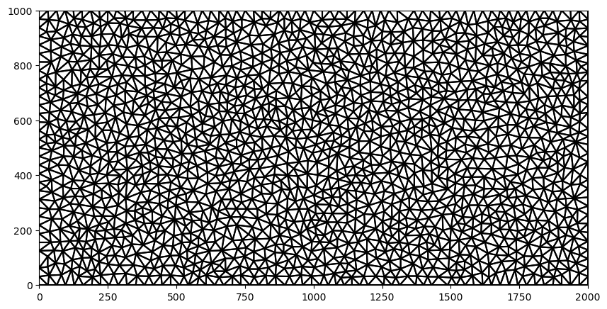
Create and Plot FloPy Voronoi Grid
The Flopy VoronoiGrid class can be used to generate voronoi grids using the scipy.spatial.Voronoi class. The VoronoiGrid class is a thin wrapper that makes sure edge cells are closed and provides methods for obtaining the information needed to make FloPy MODFLOW models. It works by passing in the flopy Triangle object generated in the previous cell.
[4]:
voronoi_grid = VoronoiGrid(tri)
fig = plt.figure(figsize=(10, 10))
ax = plt.subplot(1, 1, 1, aspect="equal")
voronoi_grid.plot(ax=ax, facecolor="none");
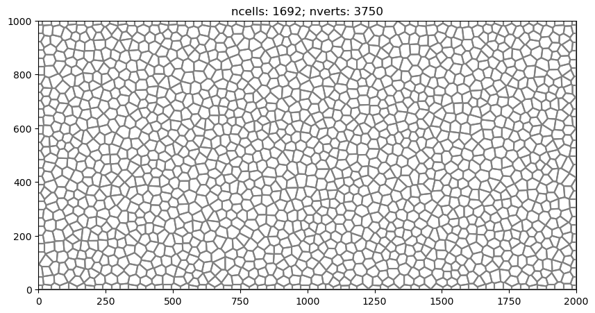
Use the VertexGrid Representation to Identify Boundary Cells
[5]:
gridprops = voronoi_grid.get_gridprops_vertexgrid()
vgrid = flopy.discretization.VertexGrid(**gridprops, nlay=1)
ibd = np.zeros(vgrid.ncpl, dtype=int)
gi = flopy.utils.GridIntersect(vgrid)
# identify cells on left edge
line = LineString([(xmin, ymin), (xmin, ymax)])
cells0 = gi.intersect(line)["cellids"]
cells0 = np.array(list(cells0))
ibd[cells0] = 1
# identify cells on right edge
line = LineString([(xmax, ymin), (xmax, ymax)])
cells1 = gi.intersect(line)["cellids"]
cells1 = np.array(list(cells1))
ibd[cells1] = 2
# identify cell for a constant concentration condition
point = Point((500, 500))
cells2 = gi.intersect(point)["cellids"]
cells2 = np.array(list(cells2))
ibd[cells2] = 3
if True:
fig = plt.figure(figsize=(10, 10))
ax = plt.subplot(1, 1, 1, aspect="equal")
pmv = flopy.plot.PlotMapView(modelgrid=vgrid)
pmv.plot_array(ibd)
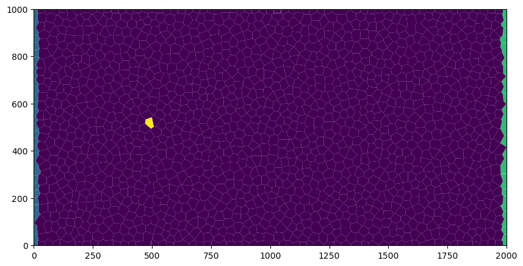
Create Run and Post Process a MODFLOW 6 Flow Model
[6]:
name = "mf"
sim_ws = os.path.join(workspace, "flow")
sim = flopy.mf6.MFSimulation(
sim_name=name, version="mf6", exe_name="mf6", sim_ws=sim_ws
)
tdis = flopy.mf6.ModflowTdis(
sim, time_units="DAYS", perioddata=[[1.0, 1, 1.0]]
)
gwf = flopy.mf6.ModflowGwf(sim, modelname=name, save_flows=True)
ims = flopy.mf6.ModflowIms(
sim,
print_option="SUMMARY",
complexity="complex",
outer_dvclose=1.0e-8,
inner_dvclose=1.0e-8,
)
disv_gridprops = voronoi_grid.get_disv_gridprops()
nlay = 1
top = 1.0
botm = [0.0]
disv = flopy.mf6.ModflowGwfdisv(
gwf, nlay=nlay, **disv_gridprops, top=top, botm=botm
)
npf = flopy.mf6.ModflowGwfnpf(
gwf,
xt3doptions=[(True)],
k=10.0,
save_saturation=True,
save_specific_discharge=True,
)
ic = flopy.mf6.ModflowGwfic(gwf)
chdlist = []
for icpl in cells0:
chdlist.append([(0, icpl), 1.0])
for icpl in cells1:
chdlist.append([(0, icpl), 0.0])
chd = flopy.mf6.ModflowGwfchd(gwf, stress_period_data=chdlist)
oc = flopy.mf6.ModflowGwfoc(
gwf,
budget_filerecord="{}.bud".format(name),
head_filerecord="{}.hds".format(name),
saverecord=[("HEAD", "ALL"), ("BUDGET", "ALL")],
printrecord=[("HEAD", "LAST"), ("BUDGET", "LAST")],
)
sim.write_simulation()
success, buff = sim.run_simulation(report=True, silent=True)
head = gwf.output.head().get_data()
bdobj = gwf.output.budget()
spdis = bdobj.get_data(text="DATA-SPDIS")[0]
fig = plt.figure(figsize=(15, 15))
ax = plt.subplot(1, 1, 1, aspect="equal")
pmv = flopy.plot.PlotMapView(gwf)
pmv.plot_array(head, cmap="jet", alpha=0.5)
pmv.plot_vector(spdis["qx"], spdis["qy"], alpha=0.25);
WARNING: Unable to resolve dimension of ('gwf6', 'disv', 'cell2d', 'cell2d', 'icvert') based on shape "ncvert".
writing simulation...
writing simulation name file...
writing simulation tdis package...
writing solution package ims_-1...
writing model mf...
writing model name file...
writing package disv...
writing package npf...
writing package ic...
writing package chd_0...
INFORMATION: maxbound in ('gwf6', 'chd', 'dimensions') changed to 62 based on size of stress_period_data
writing package oc...
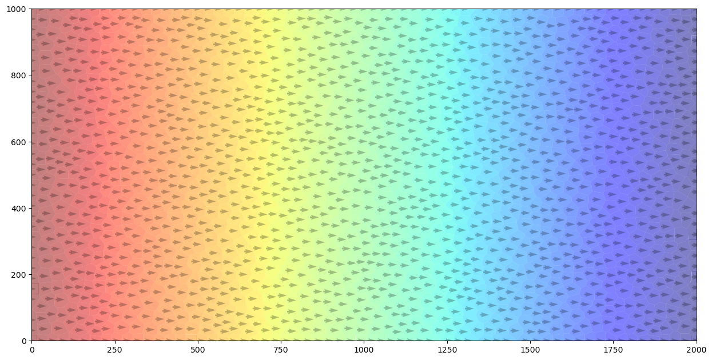
Create Run and Post Process a MODFLOW 6 Transport Model
[7]:
name = "mf"
sim_ws = os.path.join(workspace, "transport")
sim = flopy.mf6.MFSimulation(
sim_name=name, version="mf6", exe_name="mf6", sim_ws=sim_ws
)
tdis = flopy.mf6.ModflowTdis(
sim, time_units="DAYS", perioddata=[[100 * 365.0, 100, 1.0]]
)
gwt = flopy.mf6.ModflowGwt(sim, modelname=name, save_flows=True)
ims = flopy.mf6.ModflowIms(
sim,
print_option="SUMMARY",
complexity="simple",
linear_acceleration="bicgstab",
outer_dvclose=1.0e-6,
inner_dvclose=1.0e-6,
)
disv_gridprops = voronoi_grid.get_disv_gridprops()
nlay = 1
top = 1.0
botm = [0.0]
disv = flopy.mf6.ModflowGwtdisv(
gwt, nlay=nlay, **disv_gridprops, top=top, botm=botm
)
ic = flopy.mf6.ModflowGwtic(gwt, strt=0.0)
sto = flopy.mf6.ModflowGwtmst(gwt, porosity=0.2)
adv = flopy.mf6.ModflowGwtadv(gwt, scheme="TVD")
dsp = flopy.mf6.ModflowGwtdsp(gwt, alh=5.0, ath1=0.5)
sourcerecarray = [()]
ssm = flopy.mf6.ModflowGwtssm(gwt, sources=sourcerecarray)
cnclist = [
[(0, cells2[0]), 1.0],
]
cnc = flopy.mf6.ModflowGwtcnc(
gwt, maxbound=len(cnclist), stress_period_data=cnclist, pname="CNC-1"
)
pd = [
("GWFHEAD", "../flow/mf.hds"),
("GWFBUDGET", "../flow/mf.bud"),
]
fmi = flopy.mf6.ModflowGwtfmi(gwt, packagedata=pd)
oc = flopy.mf6.ModflowGwtoc(
gwt,
budget_filerecord="{}.cbc".format(name),
concentration_filerecord="{}.ucn".format(name),
saverecord=[("CONCENTRATION", "ALL"), ("BUDGET", "ALL")],
)
sim.write_simulation()
success, buff = sim.run_simulation(report=True, silent=True)
conc = gwt.output.concentration().get_data()
fig = plt.figure(figsize=(10, 10))
ax = plt.subplot(1, 1, 1, aspect="equal")
pmv = flopy.plot.PlotMapView(gwf)
c = pmv.plot_array(conc, cmap="jet")
pmv.contour_array(conc, levels=(0.0001, 0.001, 0.01, 0.1), colors="y")
plt.colorbar(c, shrink=0.5);
WARNING: Unable to resolve dimension of ('gwt6', 'disv', 'cell2d', 'cell2d', 'icvert') based on shape "ncvert".
writing simulation...
writing simulation name file...
writing simulation tdis package...
writing solution package ims_-1...
writing model mf...
writing model name file...
writing package disv...
writing package ic...
writing package mst...
writing package adv...
writing package dsp...
writing package ssm...
writing package cnc-1...
writing package fmi...
writing package oc...
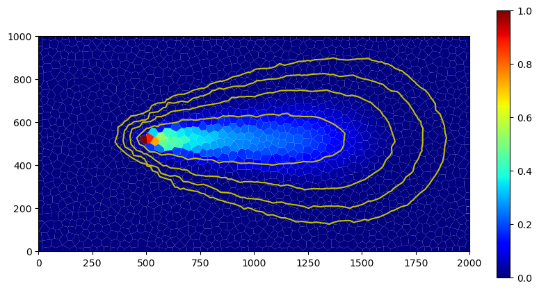
Building Voronoi Grid Examples
Irregular Domain Boundary
[8]:
domain = [
[1831.381546, 6335.543757],
[4337.733475, 6851.136153],
[6428.747084, 6707.916043],
[8662.980804, 6493.085878],
[9350.437333, 5891.561415],
[9235.861245, 4717.156511],
[8963.743036, 3685.971717],
[8691.624826, 2783.685023],
[8047.13433, 2038.94045],
[7416.965845, 578.0953252],
[6414.425073, 105.4689614],
[5354.596258, 205.7230386],
[4624.173696, 363.2651598],
[3363.836725, 563.7733141],
[1330.11116, 1809.788273],
[399.1804436, 2998.515188],
[914.7728404, 5132.494831],
]
area_max = 100.0**2
tri = Triangle(maximum_area=area_max, angle=30, model_ws=workspace)
poly = np.array(domain)
tri.add_polygon(poly)
tri.build(verbose=False)
vor = VoronoiGrid(tri)
gridprops = vor.get_gridprops_vertexgrid()
voronoi_grid = VertexGrid(**gridprops, nlay=1)
fig = plt.figure(figsize=(10, 10))
ax = fig.add_subplot()
ax.set_aspect("equal")
voronoi_grid.plot(ax=ax)
[8]:
<matplotlib.collections.LineCollection at 0x7f7537094c40>
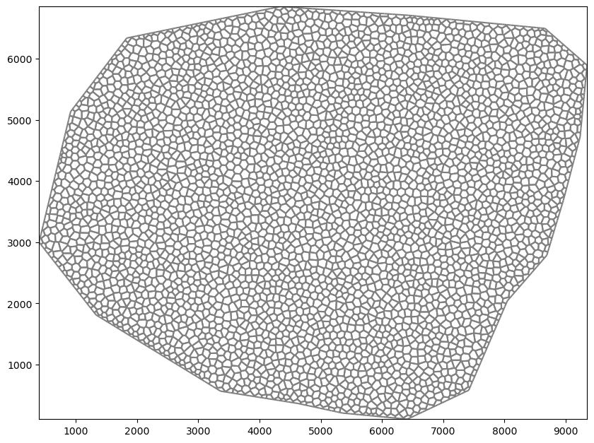
Simple Rectangular Domain
[9]:
xmin = 0.0
xmax = 2.0
ymin = 0.0
ymax = 1.0
area_max = 0.001
tri = Triangle(maximum_area=area_max, angle=30, model_ws=workspace)
poly = np.array(((xmin, ymin), (xmax, ymin), (xmax, ymax), (xmin, ymax)))
tri.add_polygon(poly)
tri.build(verbose=False)
vor = VoronoiGrid(tri)
gridprops = vor.get_gridprops_vertexgrid()
voronoi_grid = VertexGrid(**gridprops, nlay=1)
fig = plt.figure(figsize=(10, 10))
ax = fig.add_subplot()
ax.set_aspect("equal")
voronoi_grid.plot(ax=ax)
[9]:
<matplotlib.collections.LineCollection at 0x7f753725c760>
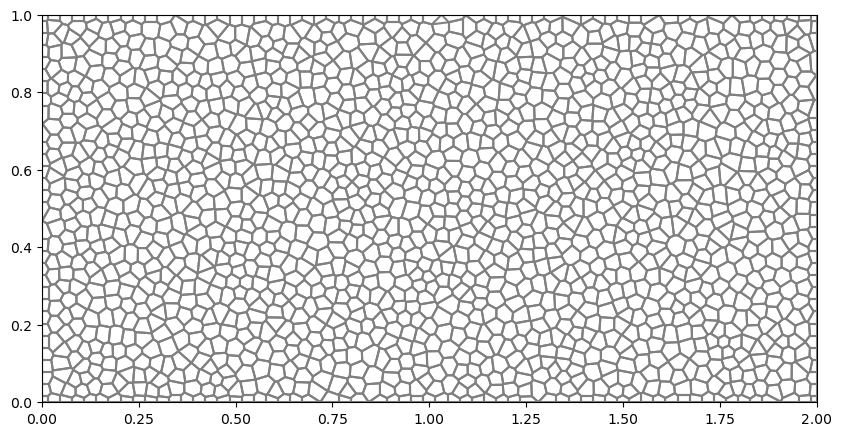
Circular Grid
[10]:
theta = np.arange(0.0, 2 * np.pi, 0.2)
radius = 100.0
x = radius * np.cos(theta)
y = radius * np.sin(theta)
circle_poly = [(x, y) for x, y in zip(x, y)]
tri = Triangle(maximum_area=5, angle=30, model_ws=workspace)
tri.add_polygon(circle_poly)
tri.build(verbose=False)
vor = VoronoiGrid(tri)
gridprops = vor.get_gridprops_vertexgrid()
voronoi_grid = VertexGrid(**gridprops, nlay=1)
fig = plt.figure(figsize=(10, 10))
ax = fig.add_subplot()
ax.set_aspect("equal")
voronoi_grid.plot(ax=ax)
[10]:
<matplotlib.collections.LineCollection at 0x7f75366fbe80>
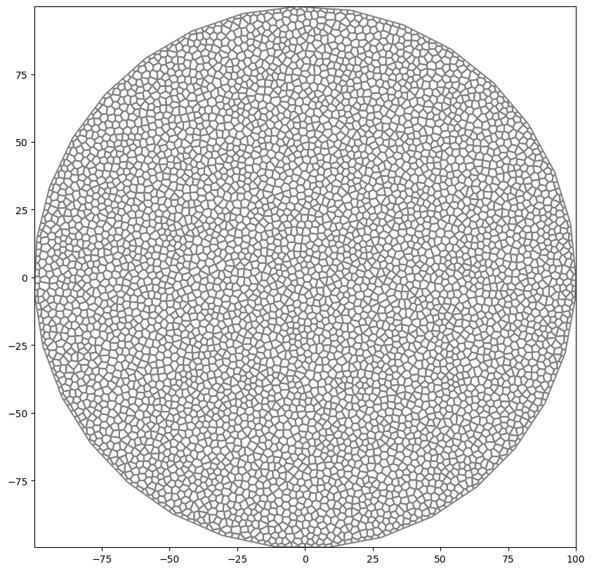
Circular Grid with Hole
[11]:
theta = np.arange(0.0, 2 * np.pi, 0.2)
radius = 30.0
x = radius * np.cos(theta) + 25.0
y = radius * np.sin(theta) + 25.0
inner_circle_poly = [(x, y) for x, y in zip(x, y)]
tri = Triangle(maximum_area=10, angle=30, model_ws=workspace)
tri.add_polygon(circle_poly)
tri.add_polygon(inner_circle_poly)
tri.add_hole((25, 25))
tri.build(verbose=False)
vor = VoronoiGrid(tri)
gridprops = vor.get_gridprops_vertexgrid()
voronoi_grid = VertexGrid(**gridprops, nlay=1)
fig = plt.figure(figsize=(10, 10))
ax = fig.add_subplot()
ax.set_aspect("equal")
voronoi_grid.plot(ax=ax)
[11]:
<matplotlib.collections.LineCollection at 0x7f753631b040>
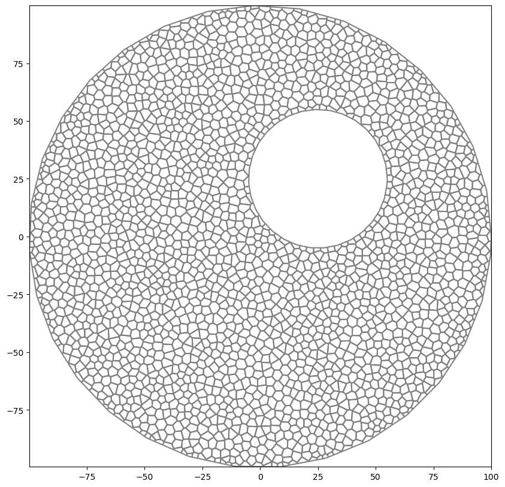
Regions with Different Refinement
[12]:
active_domain = [(0, 0), (100, 0), (100, 100), (0, 100)]
area1 = [(10, 10), (40, 10), (40, 40), (10, 40)]
area2 = [(60, 60), (80, 60), (80, 80), (60, 80)]
tri = Triangle(angle=30, model_ws=workspace)
tri.add_polygon(active_domain)
tri.add_polygon(area1)
tri.add_polygon(area2)
tri.add_region((1, 1), 0, maximum_area=100) # point inside active domain
tri.add_region((11, 11), 1, maximum_area=10) # point inside area1
tri.add_region((61, 61), 2, maximum_area=3) # point inside area2
tri.build(verbose=False)
vor = VoronoiGrid(tri)
gridprops = vor.get_gridprops_vertexgrid()
voronoi_grid = VertexGrid(**gridprops, nlay=1)
fig = plt.figure(figsize=(10, 10))
ax = fig.add_subplot()
ax.set_aspect("equal")
voronoi_grid.plot(ax=ax)
[12]:
<matplotlib.collections.LineCollection at 0x7f7536277790>
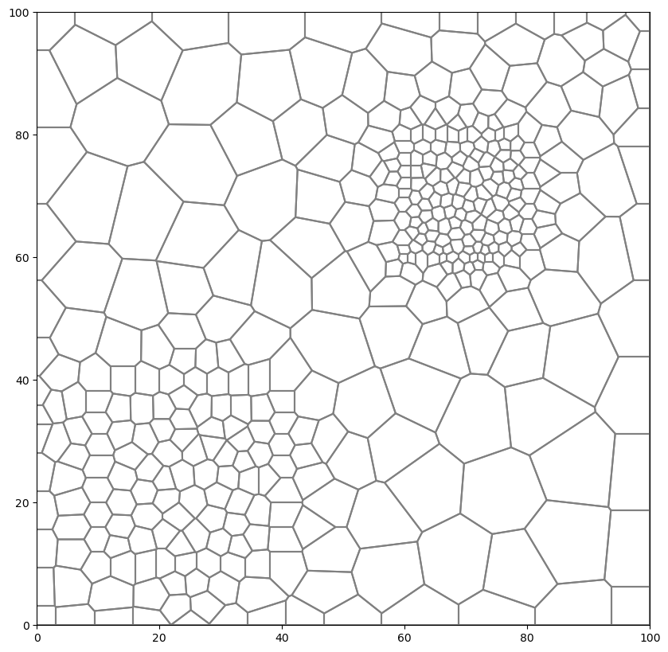
Regions with Different Refinement and Hole
[13]:
active_domain = [(0, 0), (100, 0), (100, 100), (0, 100)]
area1 = [(10, 10), (40, 10), (40, 40), (10, 40)]
area2 = [(70, 70), (90, 70), (90, 90), (70, 90)]
tri = Triangle(angle=30, model_ws=workspace)
# requirement that active_domain is first polygon to be added
tri.add_polygon(active_domain)
# requirement that any holes be added next
theta = np.arange(0.0, 2 * np.pi, 0.2)
radius = 10.0
x = radius * np.cos(theta) + 50.0
y = radius * np.sin(theta) + 70.0
circle_poly0 = [(x, y) for x, y in zip(x, y)]
tri.add_polygon(circle_poly0)
tri.add_hole((50, 70))
# Add a polygon to force cells to conform to it
theta = np.arange(0.0, 2 * np.pi, 0.2)
radius = 10.0
x = radius * np.cos(theta) + 70.0
y = radius * np.sin(theta) + 20.0
circle_poly1 = [(x, y) for x, y in zip(x, y)]
tri.add_polygon(circle_poly1)
# tri.add_hole((70, 20))
# add line through domain to force conforming cells
line = [(x, x) for x in np.linspace(11, 89, 100)]
tri.add_polygon(line)
# then regions and other polygons should follow
tri.add_polygon(area1)
tri.add_polygon(area2)
tri.add_region((1, 1), 0, maximum_area=100) # point inside active domain
tri.add_region((11, 11), 1, maximum_area=10) # point inside area1
tri.add_region((70, 70), 2, maximum_area=1) # point inside area2
tri.build(verbose=False)
vor = VoronoiGrid(tri)
gridprops = vor.get_gridprops_vertexgrid()
voronoi_grid = VertexGrid(**gridprops, nlay=1)
fig = plt.figure(figsize=(10, 10))
ax = fig.add_subplot()
ax.set_aspect("equal")
voronoi_grid.plot(ax=ax)
[13]:
<matplotlib.collections.LineCollection at 0x7f7536451600>
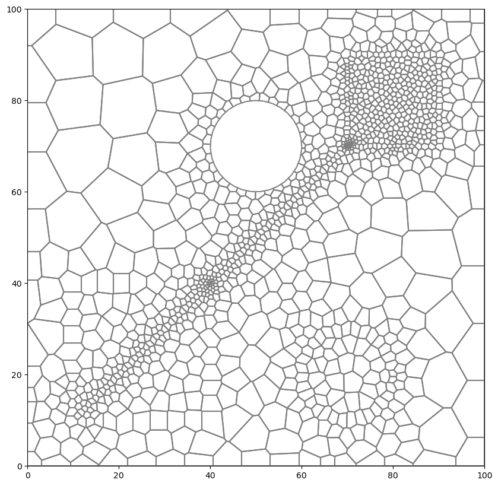
[14]:
try:
# ignore PermissionError on Windows
temp_dir.cleanup()
except:
pass